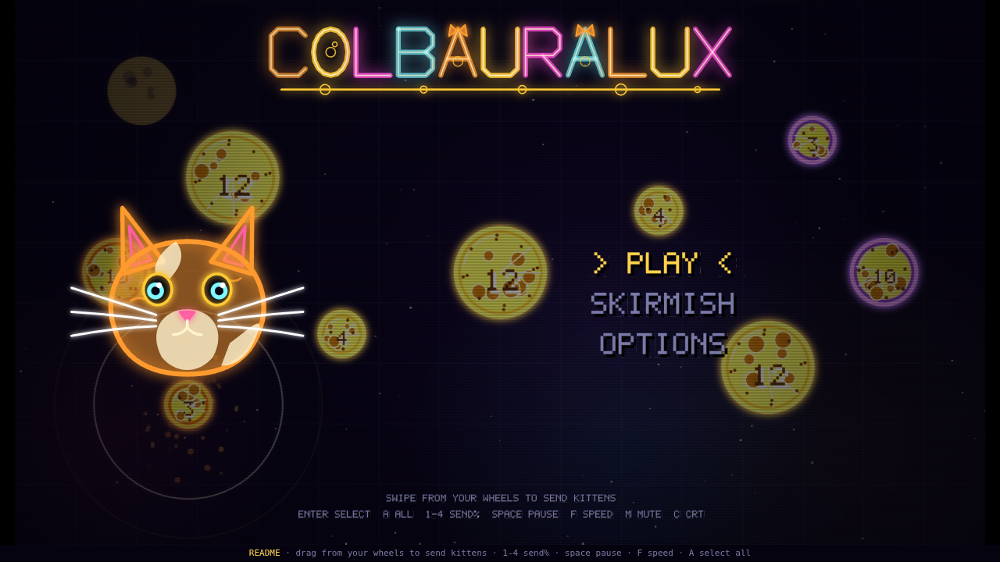
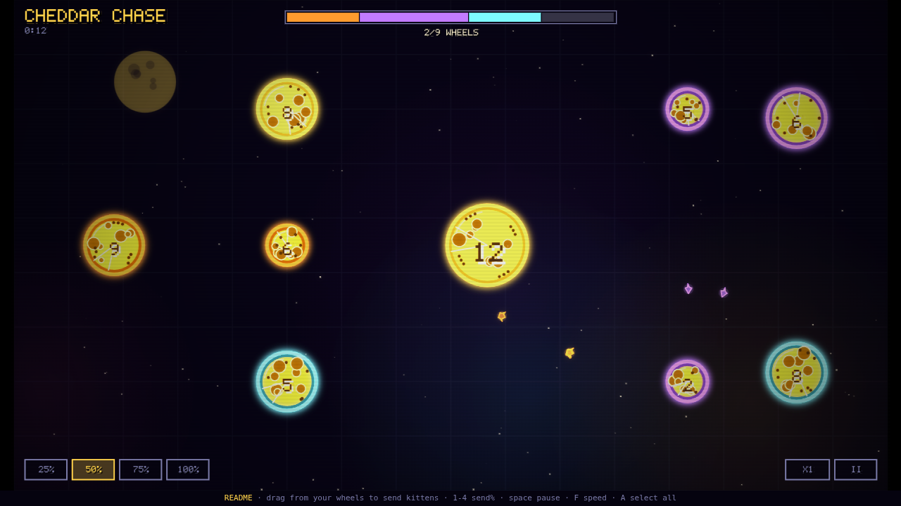
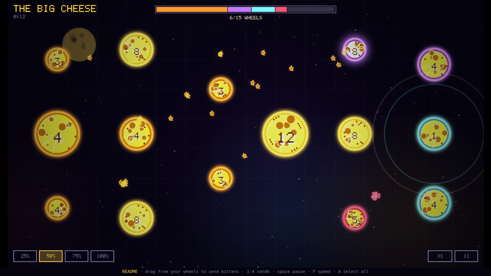

Features
Swarm RTS
Swipe across your wheels, release on a target, and watch a stream of kittens pour out.
15 level campaign
From First Nibble to The Big Cheese, with par-time stars and four difficulties.
Five AI personalities
Rushers, turtles, expanders, balanced and snipers, each with its own habits.
Zero assets
Neon art drawn by code, every sound and track synthesized. About 250 KB in one file.
Juice
Glow, particles, screen shake, ripples and an optional CRT filter.
Skirmish seeds
Fair random maps from any seed number.
Screenshots



Controls
| Input | Action |
|---|---|
| Drag from your wheel to any wheel | Send ships (swipe over your other wheels to add them) |
| Tap own wheel, tap target | Select then send |
| Double-tap empty / A / Esc | Select all / clear selection |
| 1 2 3 4 | Send 25 / 50 / 75 / 100% |
| Space, F, R, N | Pause, speed, restart, next level |
| M, C, V | Mute, CRT, fullscreen |
Factions
You. Kittens.
Purple rats.
Cyan mice.
The final boss.
Docs
README · How to play · Architecture overview · Build · How it was made (all in the repository docs/ folder).
Credits
Built by a parallel swarm of AI agents coding against a shared contract: sim-core, sim-ai, levels, art-vector, render, audio, ui-shell, qa-bot, logo-icons and docs-site. Inspired by the 2011 iPad game Auralux; a sibling of Omega Ratrace and catxzzon in the Colby Jack cat universe.